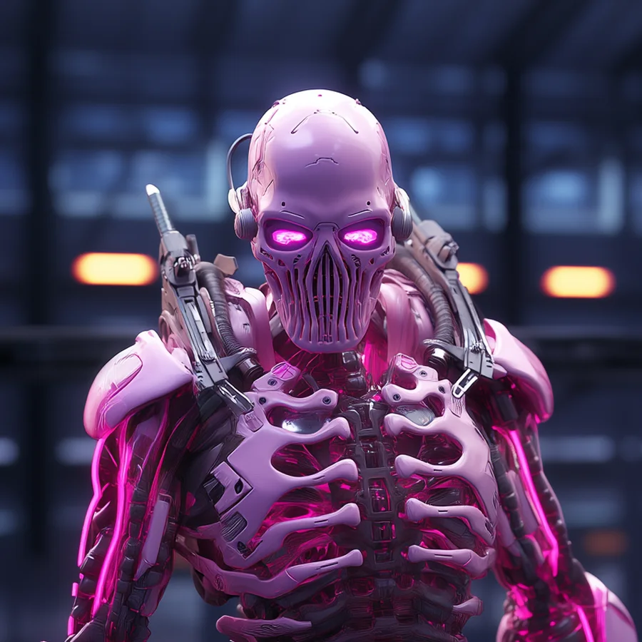
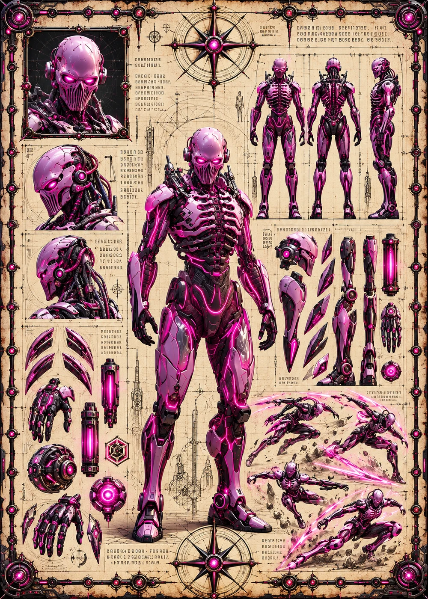

©
©
GENEZYS ARCHIVE · Earth 2 · Synthbot
Zyth
Ruin Arbiter

Archive record
Zyth decides which ruins of Earth 1 are worth taking, and which are worth making. The Unravel Wave stuns a single enemy and keeps hurting them while they cannot move. No Grim Corsair raid sets sail through the portal without Zyth's approval.
Combat signature
Unravel Wave
90 Cosmara
410 Animus
330 Vitalis
Throws an arcing surge: Stuns 1 enemy for 2 rounds. Deals 110 damage for 2 rounds.
Genezys 06:09 ™&©2026LEGIONS
